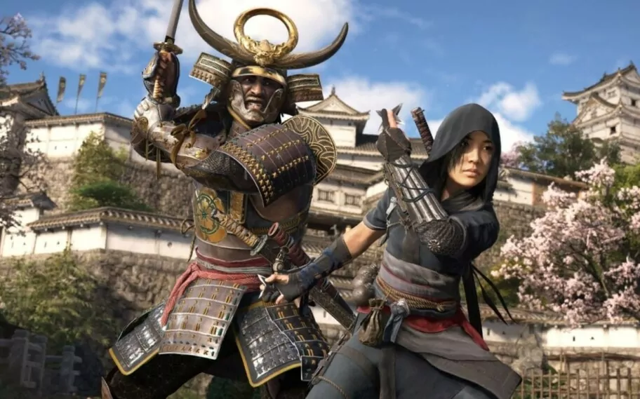

Dragon Ball: Sparking! Zero" foi lançado em outubro de 2024 com batalhas 3D intensas e modos novos, trazendo personagens como Goku e Broly, além de bônus de pré-venda exclusivos.
O PS5 Pro será lançado em novembro de 2024, com gráficos aprimorados, suporte para 8K, Wi-Fi 7 e 2TB de armazenamento, oferecendo uma experiência de jogo ainda mais fluida e detalhada.

Final Fantasy VII Rebirth, previsto para início de 2024, é a segunda parte do remake. O jogo traz uma expansão do mundo e novas batalhas dinâmicas, com foco em emocionar tanto veteranos quanto novos jogadores.

Assassin's Creed Shadows transporta os jogadores para o Japão feudal, com lançamento previsto para 15 de novembro de 2024